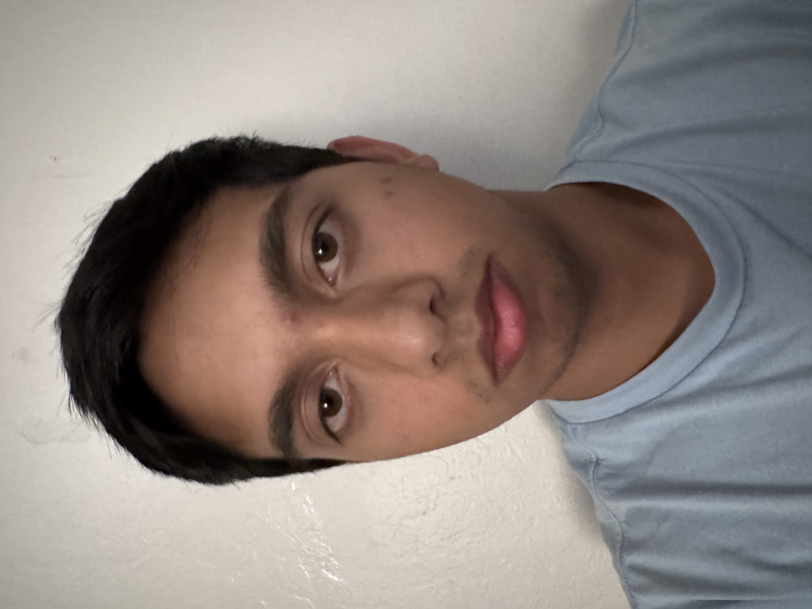
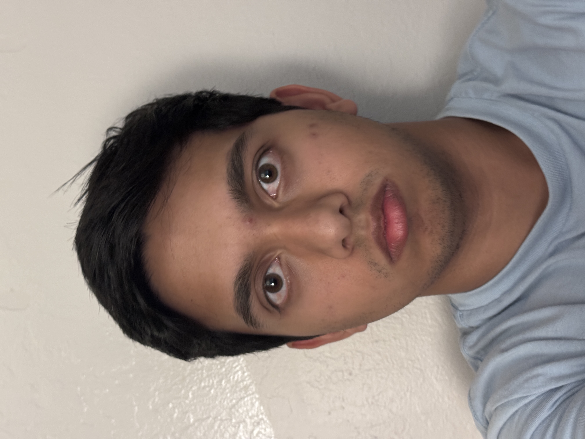
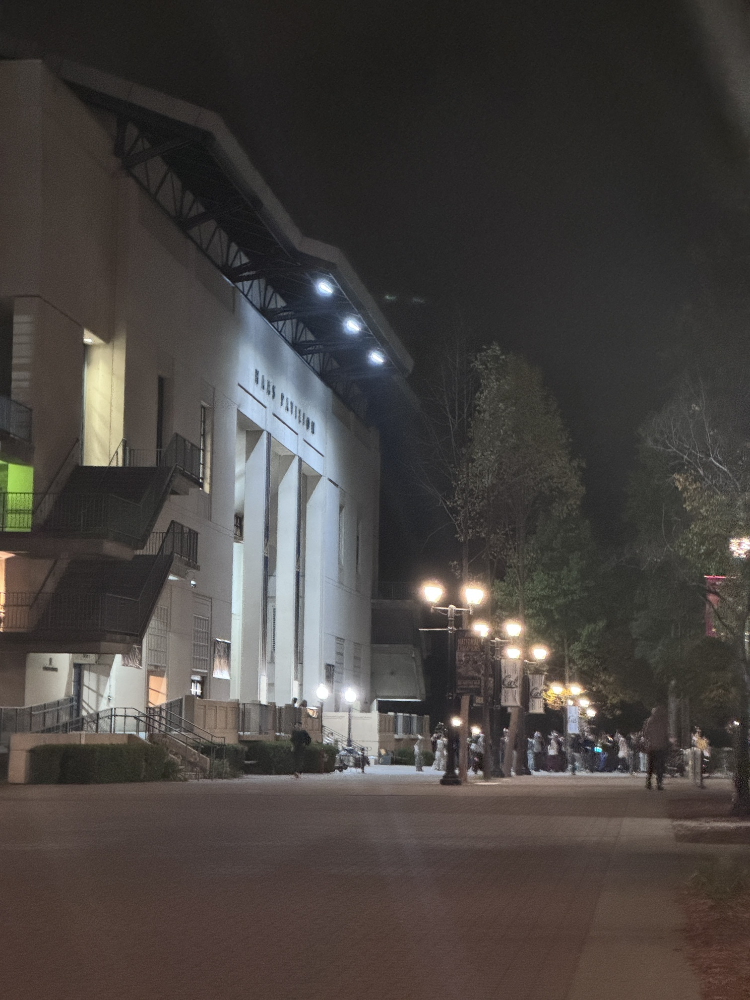
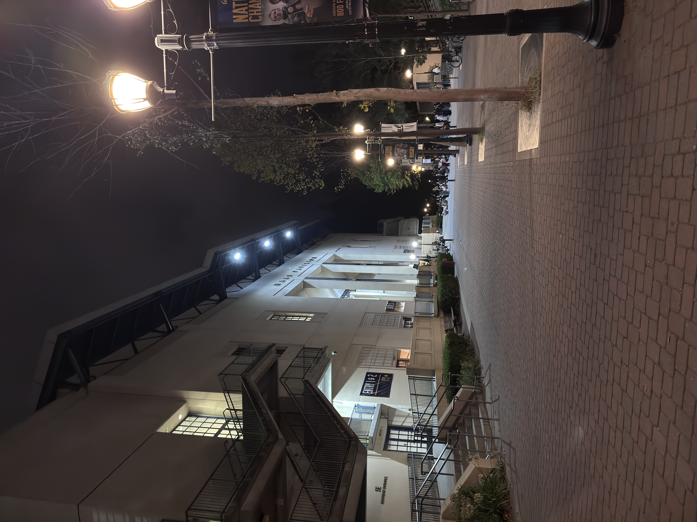

Part 1: Selfie: The Wrong Way vs. The Right Way
When the camera is close to the face, the the nose and the ear appear more pronounced as compared to the image taken with the camera farther out.

Close Up

Farther Out
Part 2: Architectural Perspective Compression
In this case, the first photo looks flattened compared to the second photo as it was taken farther away. The difference in depth along the wall's edge is less pronounced as the overall variation is less when far away as compared to up closes

Far Away and Zoomed In

Close Up
Part 3: The Dolly Zoom
The Dolly zoom effect relies on the distortion effects we see in the previous parts